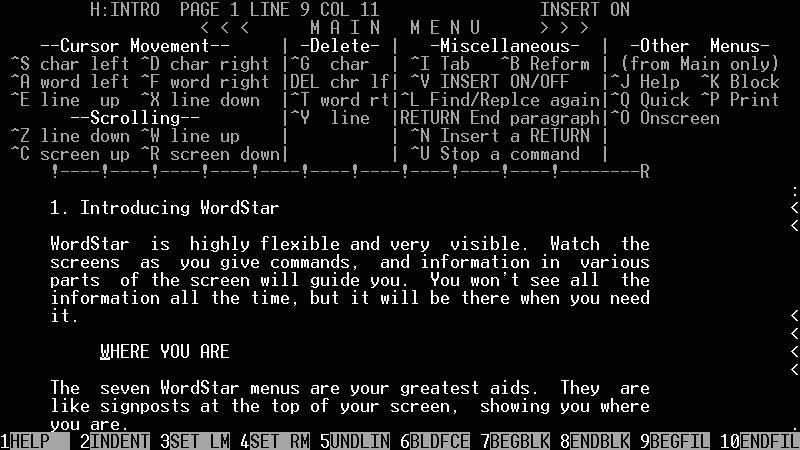
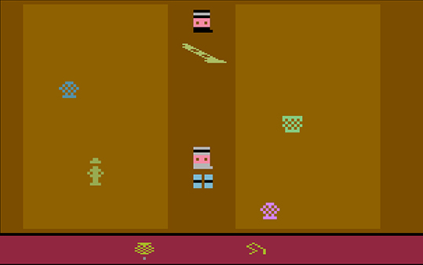
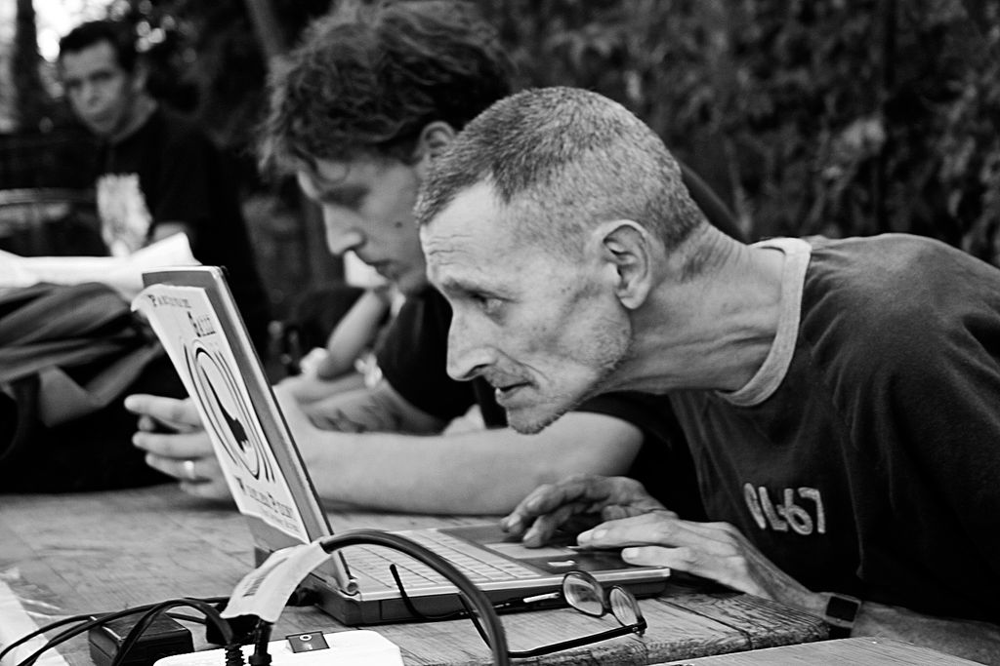
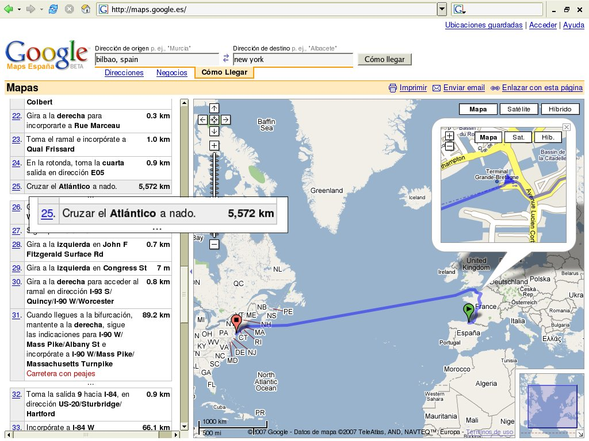

⇽
5
⇾
TOC
✏
↻
?
Loading...
¿Para qué sirve la informática?
Pulsa la tecla
→
para averiguarlo.
Esperábamos semanas por una carta ...
... y ahora segundos
Gracias Ray Tomlinson!
4GB eran dificiles de transportar ...
... y ahora los llevamos en el bolsillo
Gracias Amir Ban, Dov Moran y Oron Ogdan!

Leer en el ordenador era aburrido ...
... y ahora nos pasamos horas
Gracias Tim Berners Lee!

Los ordenadores estaban hechos mostrar texto ...
... y ahora podemos crear mundos en 3D
Gracias William Fetter!
Socializar implicaba grandes sacrificios

... chateamos debajo de la manta
Gracias Jarkko Oikarinen!
Los ordenadores eran para unos pocos ...
... y ahora lo llevamos bajo el brazo
Gracias Woz y Steve!
Sentirnos bien nos costaba sudor y lágrimas ...
... sólo tenemos que bajar Photoshop
Gracias Richard Shoup!
Nos pasabamos horas esperando una llamada ...
... no nos perdemos una
Gracias Martin Cooper!
Estábamos perdidos ...

... y ahora siempre tenemos el mapa a mano
Gracias Lars y Jens Rasmussen!
Join us
razon 1
razon 2
 4GB eran dificiles de transportar ...
4GB eran dificiles de transportar ...
 Gracias Tim Berners Lee!
4GB eran dificiles de transportar ...
Gracias Tim Berners Lee!
Gracias Tim Berners Lee!
4GB eran dificiles de transportar ...
Gracias Tim Berners Lee!